About TIRI
理監事成員
本會於 2026 年 3 月 20 日 召開會員大會選出第三屆理、監事。
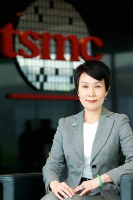
榮譽理事長
孫又文
前台灣積體電路製造股份有限公司
企業訊息處資深處長

理事長
郭宗霖
鴻勝會計師事務所
執業會計師
大井泵浦工業股份有限公司
董事
副理事長
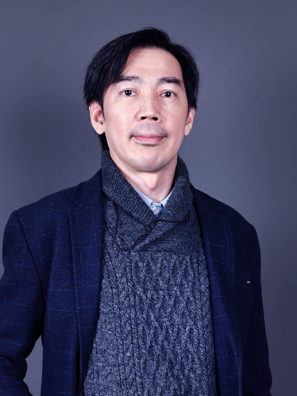
王恩國
南昌菱光科技有限公司
董事長
今皓實業股份有限公司
獨立董事
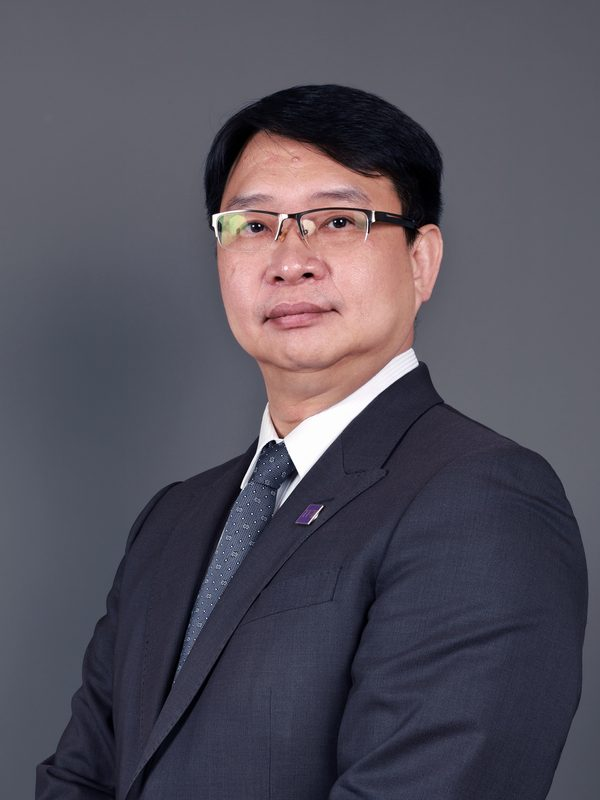
簡世雄
東元電機股份有限公司
公司治理中心處長暨發言人

張明仁
新加坡商睿智先鋒有限公司
財務長
常務理事
- 兼理事長
郭宗霖
鴻勝會計師事務所
執業會計師
大井泵浦工業股份有限公司
董事
- 兼副理事長
王恩國
南昌菱光科技有限公司
董事長
今皓實業股份有限公司
獨立董事
- 兼副理事長
簡世雄
東元電機股份有限公司
公司治理中心處長暨發言人
- 兼副理事長
張明仁
新加坡商睿智先鋒有限公司
財務長
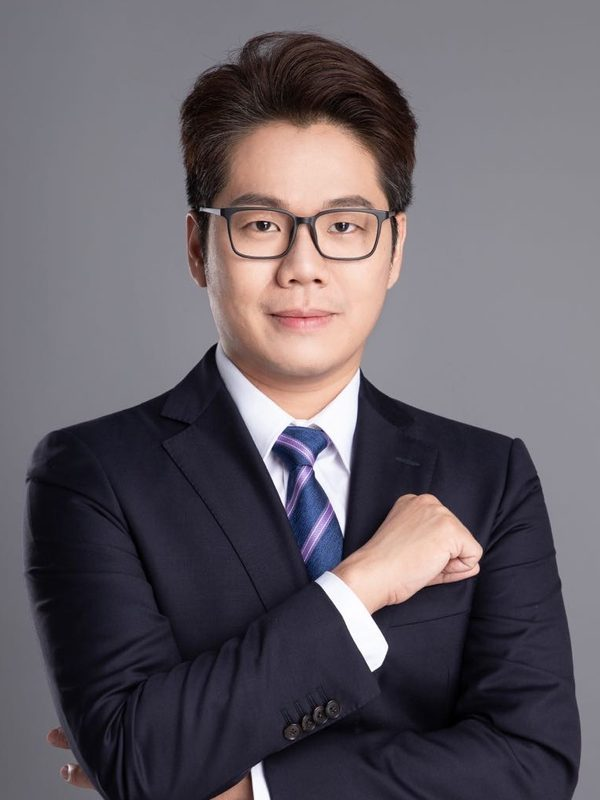
黃奕誠
鴻海精密股份有限公司
投資人關係暨永續委員會經理
理事

沈馥馥
中華電信股份有限公司
前財務處副總暨代理發言人
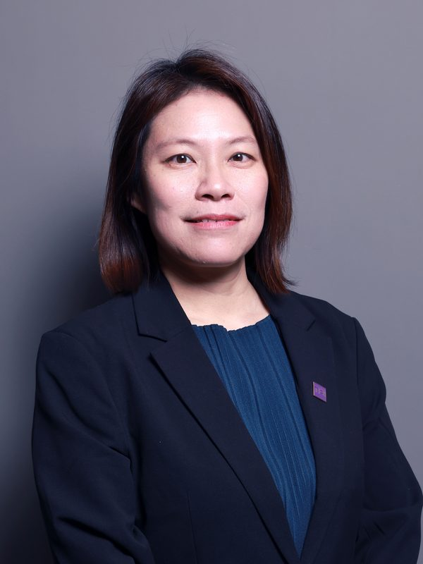
張妍婷
仁寶電腦工業股份有限公司
投資人關係暨品牌辦公室資深處長、代理發言人
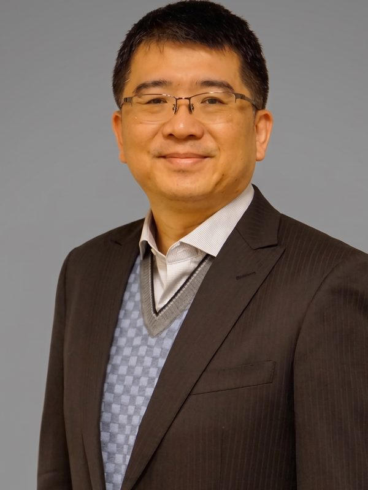
張真卿
立隆電子工業股份有限公司
董事長特助暨發言人
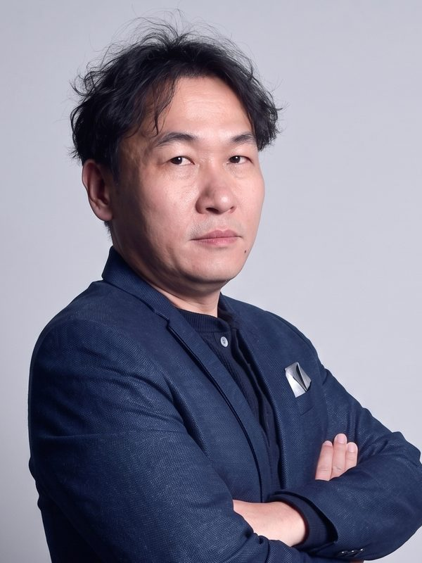
姚文鈞
全漢企業股份有限公司
董事長特別助理暨發言人
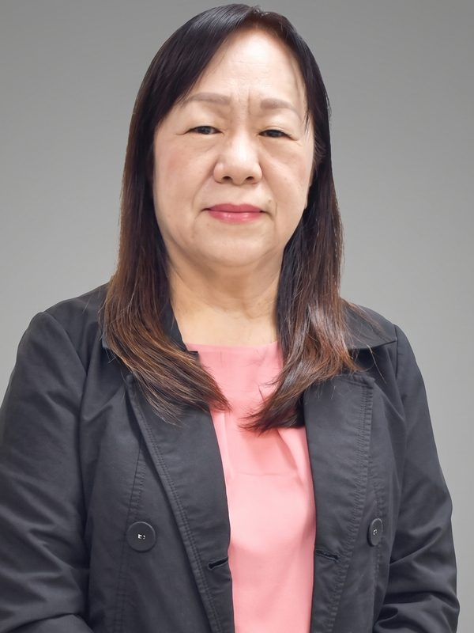
許碧雲
桓達科技股份有限公司
總經理特助暨發言人

黃英記
矽創電子股份有限公司
投資人關係暨永續辦公室處長
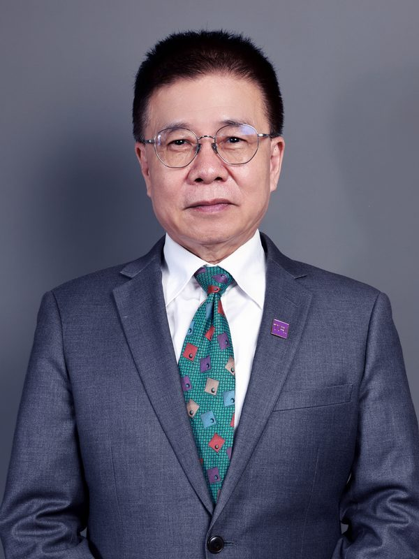
林男和
旗山龍鳳食品股份有限公司
總經理

洪健凱
經寶精密控股股份有限公司
投資人關係部經理

趙元祥
群聯電子股份有限公司
董事長特助
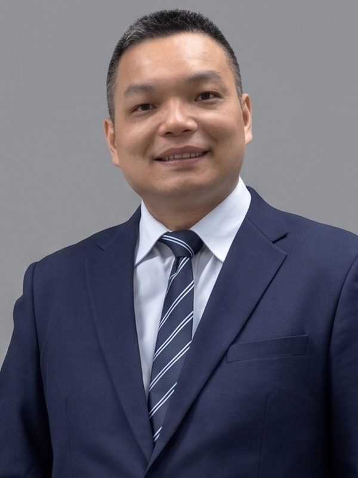
張登溪
大井泵浦工業股份有限公司
財務長
常務監事

涂蕙蘭
監事

萬心寧
圓裕企業股份有限公司
獨立董事
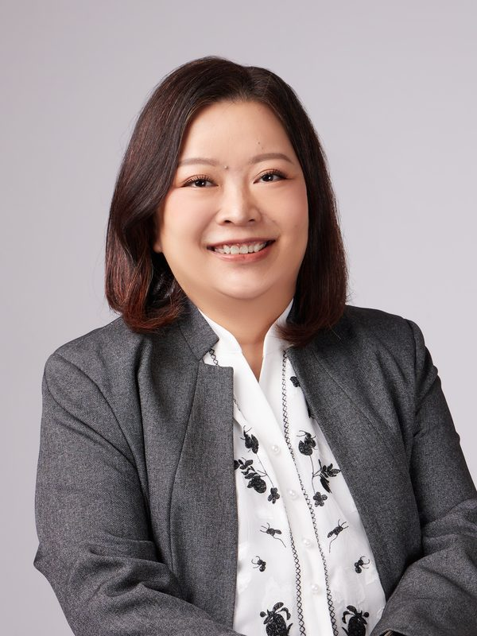
陳珮瑛
永創數智股份有限公司
資深顧問

葉文燦
宇峻奧汀科技股份有限公司
管理處協理暨發言人
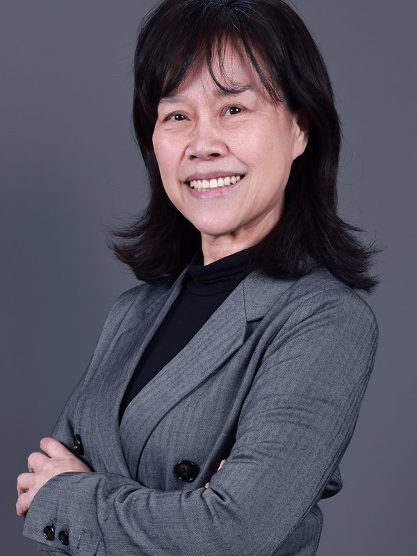
鄭可人
佳能企業
投資人關係經理暨永續發展暨風險管理執行委員會委員
榮譽顧問
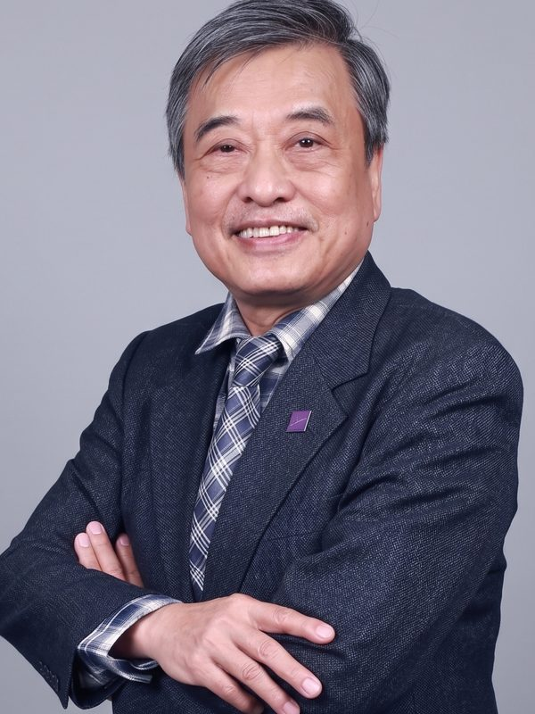
楊朝榮
中華民國證券期貨分析協會
理事
聯茂、虎航、泰博等公司
獨立董事

周德雲
矽創電子股份有限公司
前策略投資顧問

劉詩亮
TPK 宸鴻光電科技股份有限公司
資深副總經理策略長暨代理發言人

王沈銘
1919 食物銀行
特約顧問
首席顧問

余凱文
自 2004 年以來台灣投資人關係的推動者和革新者
秘書處

許育綾
秘書長
歷屆任職資訊依該屆名冊呈現；人物照片使用已取得的同一人照片，非任期當年的拍攝紀錄。尚無個別照片者保留空位。
| 照片 | 協會職務 | 姓名 | 公司名稱 | 公司職稱 |
|---|---|---|---|---|
| 榮譽理事長 | 孫又文 | 前台灣積體電路製造股份有限公司 | 企業訊息處資深處長 | |
| 理事長 | 郭宗霖 | 鴻勝會計師事務所 | 執業會計師 |
| 大井泵浦工業股份有限公司 | 董事 | |||
| 副理事長 | 王恩國 | 東友科技股份有限公司 | 副董事長 | |
| 常務理事 | 郭宗霖 | 鴻勝會計師事務所 | 執業會計師 |
| 大井泵浦工業股份有限公司 | 董事 | |||
| 常務理事 | 王恩國 | 東友科技股份有限公司 | 副董事長 | |
| 常務理事 | 劉詩亮 | TPK 宸鴻光電科技股份有限公司 | 資深副總經理 策略長暨代理發言人 |
| 常務理事 | 簡世雄 | 東元電機股份有限公司 | 公司治理中心處長暨發言人 | |
| 常務理事 | 張明仁 | 新加坡商睿智先鋒有限公司 | 財務長 |
| 理事 | 沈馥馥 | 中華電信股份有限公司 | 前財務處副總暨代理發言人 |
| 理事 | 張妍婷 | 仁寶電腦工業股份有限公司 | 投資人關係暨品牌辦公室資深處長、代理發言人 | |
| 理事 | 張真卿 | 立隆電子工業股份有限公司 | 董事長特助暨發言人 | |
| 理事 | 黃奕誠 | 鴻海精密股份有限公司 | 投資人關係暨永續委員會經理 | |
| 理事 | 許碧雲 | 桓達科技股份有限公司 | 總經理特助暨發言人 | |
| 理事 | 黃英記 | 矽創電子 | 投資人關係暨永續辦公室處長 |
| 理事 | 林男和 | 旗山龍鳳食品股份有限公司 | 總經理 | |
| 理事 | 洪健凱 | 經寶精密控股股份有限公司 | 投資人關係部經理 |
| — | 理事 | 藍世旻 | 安格科技股份有限公司 | 總經理 |
| 理事 | 王沈銘 | 1919 食物銀行 | 特約顧問 |
| 常務監事 | 涂蕙蘭 | — | — |
| 監事 | 萬心寧 | 圓裕企業股份有限公司 | 獨立董事 |
| 監事 | 姚文鈞 | 全漢企業股份有限公司 | 董事長特別助理暨發言人 | |
| 監事 | 陳珮瑛 | 力銘永續發展股份有限公司 | 永續長 | |
| 監事 | 葉文燦 | 宇峻奧汀科技股份有限公司 | 管理處協理暨發言人 |
| 榮譽顧問 | 楊朝榮 | 中華民國證券期貨分析協會 | 理事 | |
| 聯茂、虎航、泰博等公司 | 獨立董事 | |||
| 榮譽顧問 | 周德雲 | 矽創電子股份有限公司 | 前策略投資顧問 |
| 首席顧問 | 余凱文 | — | 自 2004 年以來台灣投資人關係的推動者和革新者 |
| 秘書處 | 許育綾 | — | 秘書長 |
歷屆任職資訊依該屆名冊呈現；人物照片使用已取得的同一人照片，非任期當年的拍攝紀錄。尚無個別照片者保留空位。
| 照片 | 協會職務 | 姓名 | 公司名稱 | 公司職稱 |
|---|---|---|---|---|
| 榮譽理事長 | 孫又文 | 台灣積體電路製造股份有限公司 | 企業訊息處資深處長 | |
| 理事長 | 沈馥馥 | 中華電信 | 公共事務處協理暨代理發言人 |
| 副理事長 | 郭宗霖 | 霹靂國際 | 財務長暨代理發言人 |
| 常務理事 | 沈馥馥 | 中華電信 | 公共事務處協理暨代理發言人 |
| 常務理事 | 郭宗霖 | 霹靂國際 | 財務長暨代理發言人 |
| 常務理事 | 劉詩亮 | TPK | 資深副總經理 策略長暨代理發言人 |
| 常務理事 | 周德雲 | 矽創電子 | 資深處長暨發言人 |
| 常務理事 | 張明仁 | 新源生物科技 | 財務副總 |
| — | 理事 | 呂軍甫 | 京鼎精密 | 發言人 |
| 理事 | 張真卿 | 立隆電子 | 董事長特助暨發言人 | |
| 理事 | 簡世雄 | 東元電機 | 公司治理中心處長暨發言人 | |
| — | 理事 | 藍世旻 | 安格科技 | 總經理暨發言人 |
| 理事 | 許碧雲 | 桓達科技 | 總經理特助暨發言人 | |
| 理事 | 黃英記 | 矽創電子 | 投資人關係暨永續發展資深經理 |
| 理事 | 林男和 | 全球創新技術產業交流協會 | 理事長 | |
| — | 理事 | 烏恩婷 | 瑞鼎科技 | 資深專案經理 |
| 理事 | 張妍婷 | 仁寶電腦 | 投資人關係部 副處長 | |
| 常務監事 | 洪健凱 | 經寶精密 | 投資人關係經理 |
| 監事 | 萬心寧 | 台驊國際 | 總經理暨發言人 |
| — | 監事 | 呂政達 | 威強電 | 前財務長暨發言人 |
| 監事 | 涂蕙蘭 | 精英電腦(股) | 資深經理暨代理發言人 |
| — | 監事 | 徐美華 | 雅茗天地 | 投資人關係高級經理暨代理發言人 |
| — | 榮譽顧問 | 余宛如 | — | 前立法委員 |
| 榮譽顧問 | 楊朝榮 | 中華民國證券分析協會 | 常務理事及研究發展委員會召集人 | |
| 首席顧問 | 余凱文 | — | 自 2004 年以來台灣投資人關係的推動者和革新者 |
| — | 秘書處 | 邱榮振 | — | 秘書長 |